SOLIDWORKS标准件处理
本文将介绍SOLIDWORKS对标准件的处理方法。标准件内容组成可能来自以下方面：
通过历史物料梳理与建库培训，灌输历史数据标准与重用理念；
按建库手册流程，完成企业历史数据历史物料模型收集；
筛选废弃和重复的物料，并且完善物料属性。
graph LR 标准件-->Toolbox-->属性管理 标准件-->企标件-->属性管理 标准件-->外购件-->属性管理 外购件-->标准件导入 外购件-->标准件优化
调研<–
此部分我们需要知道的一些内容：
建立企业零部件库：<>数量
定义库的层级；
零部件库属性信息；
录入的方法
Toolbox
简化
内容修改、增减
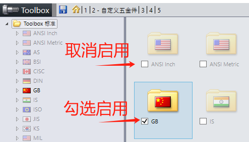属性
属性修改，属性还可以使用Excel表格批量处理
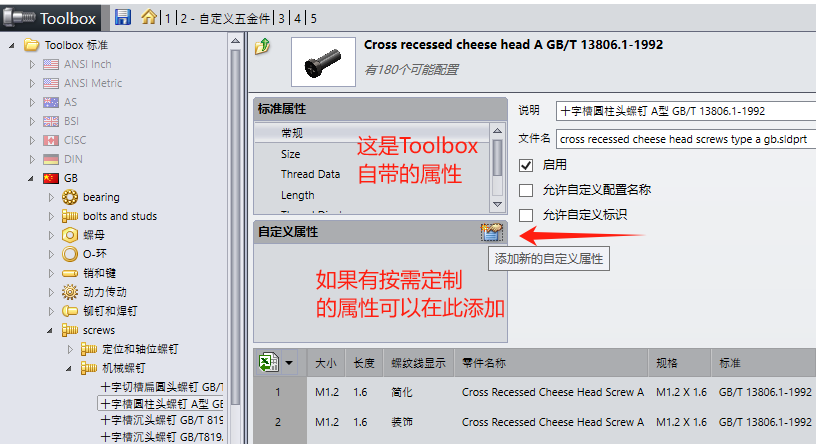规格
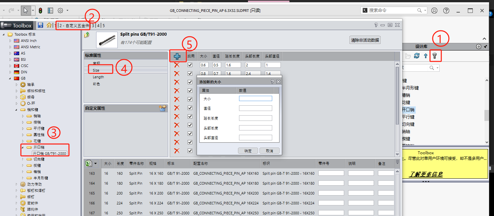使用
Toolbox是SW内置的标准件数据库文件，里面零件会根据选型生成对于的规格型号，并且在材料明细表中，可以使用在库中自定义的Toolbox属性。
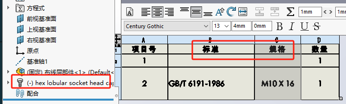不过Toolbox有个劣势就是定义使用和3D模型不便灵活修改。建议可以考虑如下方法：
(补充)
Toolbox转普通零件使用。
企标件
模型收集
开展历史物料梳理工作，获得我们常用企标件的模型文件（及装配体部件内容）。
对已有需处理文件进行备份留档；
属性
对于部分缺少属性或不规范的模型文件，使用【属性处理工具】批量进行属性写入
分类
已完善的模型按不同物料（或项目号）进行分类放入PDM中，建立企业设计库，实现对历史项目设计数据的管理和快速重用。
命名规则
对于大部分企标件使用，我们还是会在原有企标件的基础上进行二次设计。因此我们会建议要有个命名编码的识别号，来识别标准企标件和二次设计的修改件。
（例如图：我机架平台零件需要做二次设计变更，原本的00000000标准项目号，在打包时候重命名为20240411新项目号。）
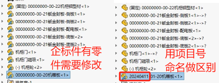外购件
外购件很多时候是来自于供应商的中间格式文件，例如：stp、x_t、IGS等格式文件。这类文件在导入SW后可能会存在几何复杂、零部件多、特征重建长等问题
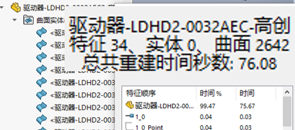导入文件
转SW格式文件：图中显示的零件的图标是开启了”3D interconnect”功能，是为了关联原格式（step）的设计信息，修改需要在原格式文件进行（在SW里是不能进行修改）。
方法 1：断开链接
你可以右键设计树需要编辑的零件，有个【解散特征】的选项。（解散特征是不可逆的）
方法 2：系统选项设置
或者是关闭【系统选项-导入-3D interconnect】功能，再打开 Step，使不关联原格式的设计信息，自己独立一份实体模型。
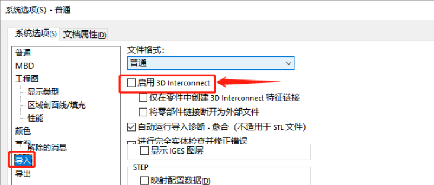属性
填写属性卡：需要在@页填写零部件名称、品牌、单位、分类、规格和描述、备注等属性。备注根据需要填写需要注意的事项，比如对规格型号未能尽述的规格进行补充，填写淘宝店网址，注明气缸活塞杆的螺纹规格等。
对于部分缺少属性或不规范的模型文件，使用【属性处理工具】批量进行属性写入
分类
已完善的模型按不同物料分类放入PDM中，建立企业设计库，方便管理标准件库和快速调用。
标准件优化
针对异常或几何复制的标准件，我们回考虑将其进行简化处理。一遍会有如下操作：
特征冻结
将影响重建的参数特征冻结，不参与计算
无参处理（不可逆，需确认）
将影响重建的参数特征，转成无参数实体
合并多实体
将复杂多实体合并成单个实体。减少实体选择对象的数量
轻量处理
减少模型非功能性复杂面
降低图形品质
装配体明细
装配体标准件的物料明细过于详细，我们不一定需要。但我们又需要装配体的配合动作时。我们可以使用如下方法处理：
1、零部件虚拟化：虚拟零件是不会又多余的零件文件，储存在装配体文件内；
2、或设置零部件【右键，属性】设置”不包括在材料明细表“
3、再或者设置装配体配置，显示材料明细表子装配体的显示模式：隐藏
报错处理
配合参考
在零件界面【插入，参考几何体，配合参考】使用配合参考。
具有配合参考的零件，在ALT+鼠标拖动时，可需配合参考自动产生配合。
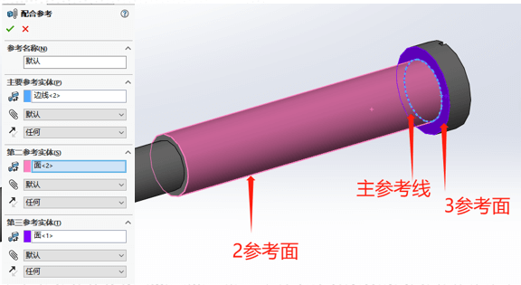智能零部件
制作智能零部件前，你需要有一份零件实际使用的装配体模型。
这里建议是做好配合约束，开孔的特征需要同智能零部件对象有参考引用的关系。
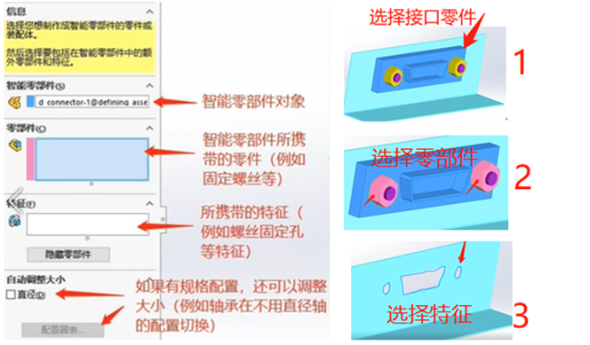交付–>
标准件库配置
共享参考文件夹路径设置，目的是为了工程师们可以使用来自同一来源的设计数据；其方法如下：
设置共享
1、网盘共享方法
2、PDM库共享方法
设置路径
设计库路径设置：
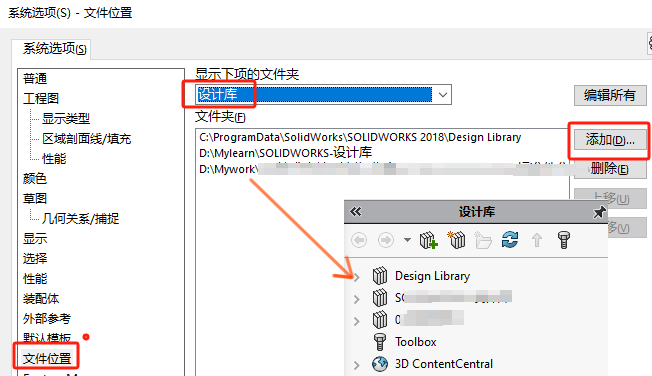标准件库使用
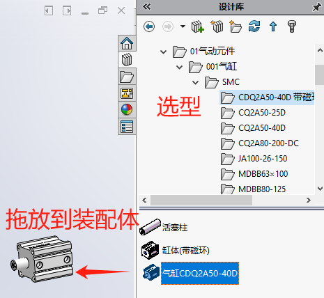2024新功能：设计库支持搜索功能
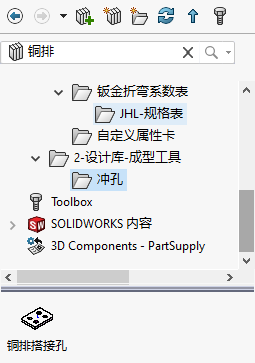设计重用培训
根据标准机型模型，分析建模步骤，向工程师讲解企业标准机型组件的建模要素和零部件装配；在SW软件内，设计重用我们可以使用【pick and go】（打包）装配体。
未进行打包的重用标准件，会保留原有的参考关系，保证数据的一致性。
（打包重用视频）
材料明细表
使用配置对自制加工件和标准件进行【压缩/解压缩】的配置区分。这将可以控制材料明细表内的内容明细显示。
我们会按按需定制材料明细表的模板内容，方便对不同表格内容的属性进行显示
SW端：交付模板文件
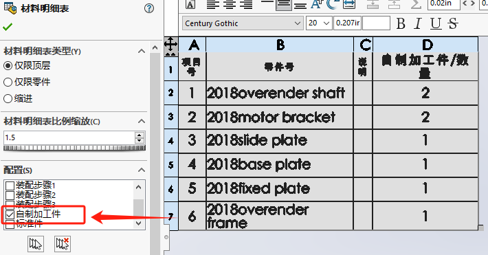PDM端：交付PDM配置文件
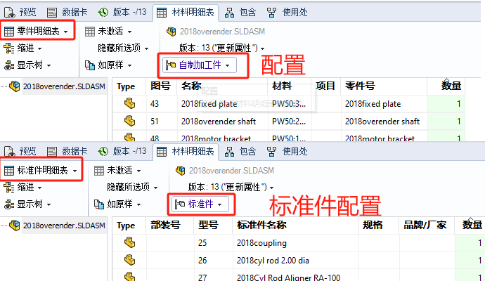总结
交付操作手册；
对工程师进行模块功能的培训，确保工程师学习SOLIDWORKS的技术对自己工作上的帮助，提高了设计的效率。
充分利用、整合了客户公司之前的设计资源进行了标准化，让新员工也可以快速上手，快速适应公司的设计标准。
项目实施结束后，同时进行售后跟踪服务，通过我们的服务内容，争取客户信任，促进后续服务计划的续订。
Q&A
Q 参考文件夹更新：当有相同命名文件时，会以此处标准件为准，进行参考借用。
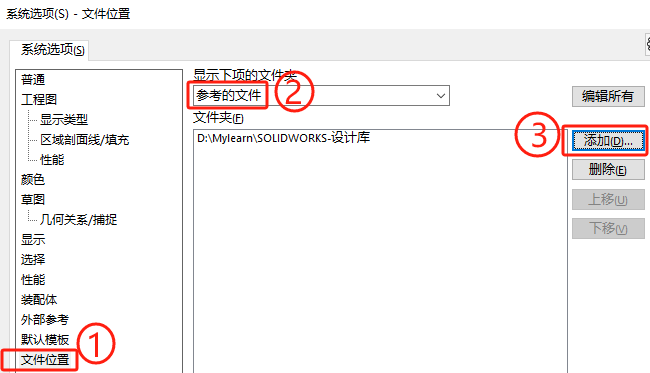 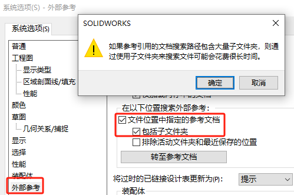Q 同名相似替换